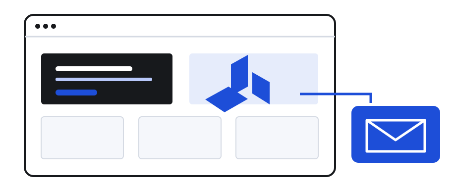
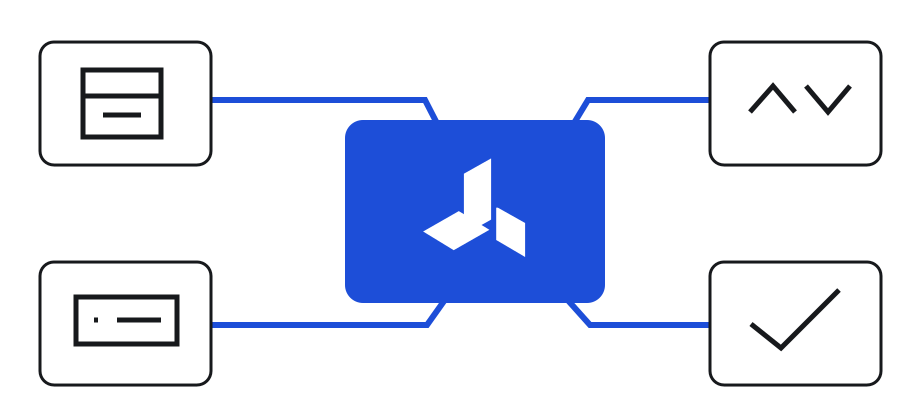
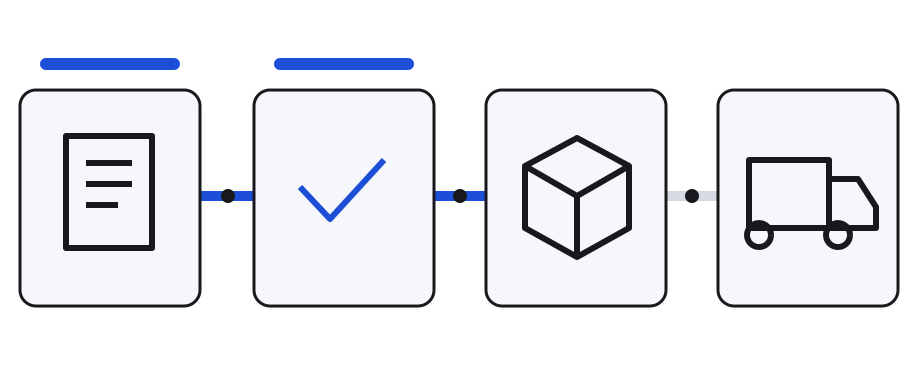
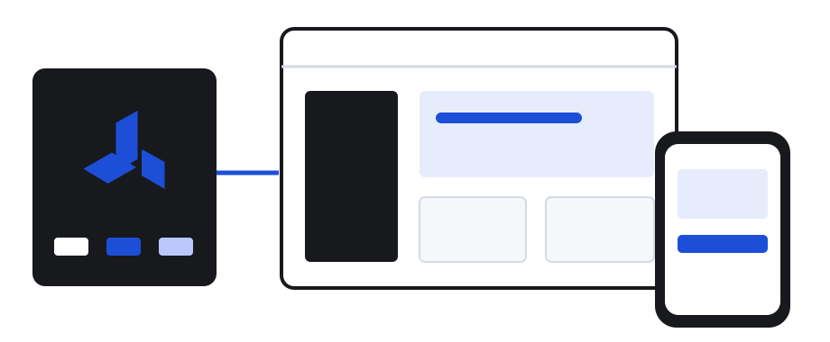
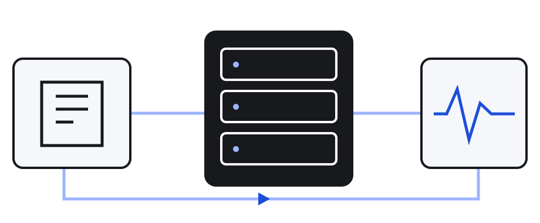
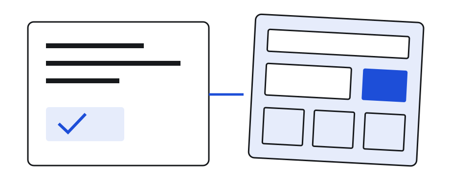

Websites
Untuk perusahaan yang dinilai dari website-nya.
Studio digital untuk identitas, website, dan sistem bisnis.

01 - Siapa kami
Kami merancang, membangun, dan menjalankan website serta sistem bisnis. Satu tim, dari awal sampai berjalan.

Identitas & antarmuka
Website & sistem
Deploy & perawatan
02 - Yang kami kerjakan

Untuk perusahaan yang dinilai dari website-nya.

Untuk operasional yang sudah melampaui spreadsheet.

Untuk bisnis yang ingin tampil dengan karakter sendiri.

Untuk setiap klien, tanpa perlu diminta.
03 - Untuk siapa
Bisnis yang operasionalnya sudah melampaui tools siap pakai
Perusahaan yang website-nya belum mencerminkan kualitas bisnisnya
Tim yang ingin satu pihak yang bertanggung jawab
Bukan untuk: yang mencari situs semurah mungkin.
04 - Bedanya
Tanpa tema atau page builder. Setiap baris ada karena proyek Anda membutuhkannya.
Server, domain, SSL, dan monitoring dikonfigurasi, bukan dikirim sebagai file.
Tim kecil, jalur pendek. Tanpa account manager di antara kita.
05 - Cara mulai
Anda tahu apa yang dikerjakan dan biayanya sebelum mulai.
Progres terlihat di staging, lalu diserahkan dalam keadaan berjalan.
Mulai percakapan
Ceritakan masalahnya. Kalau kami bukan tim yang tepat, kami akan bilang.
